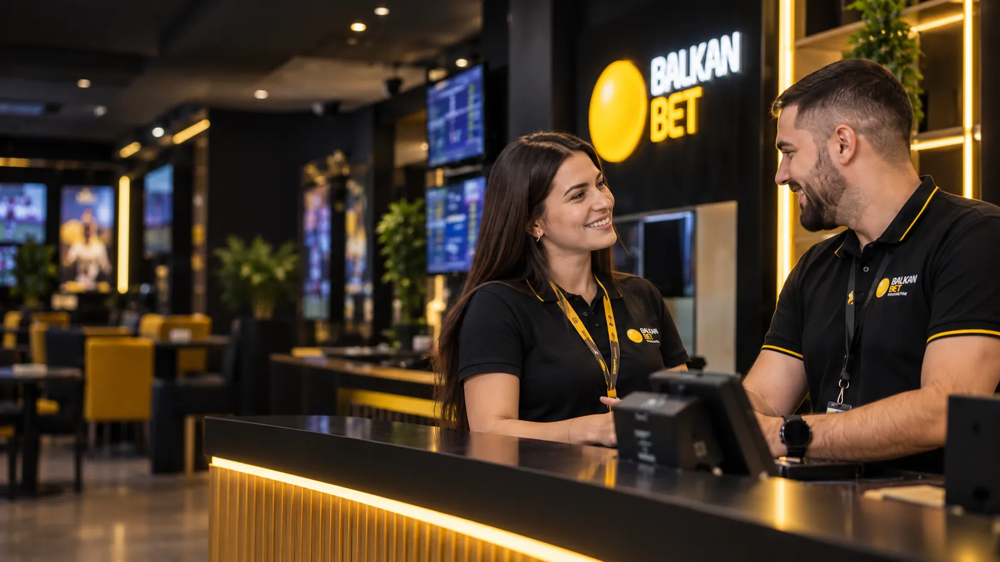
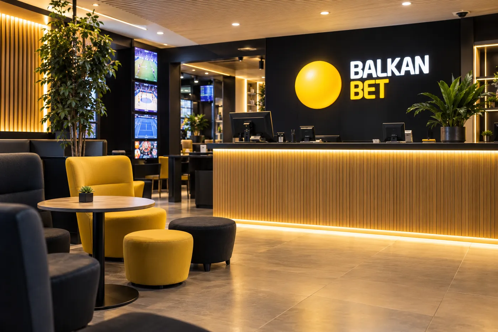
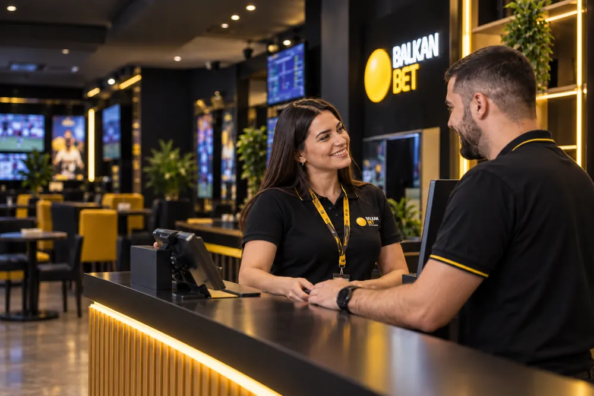
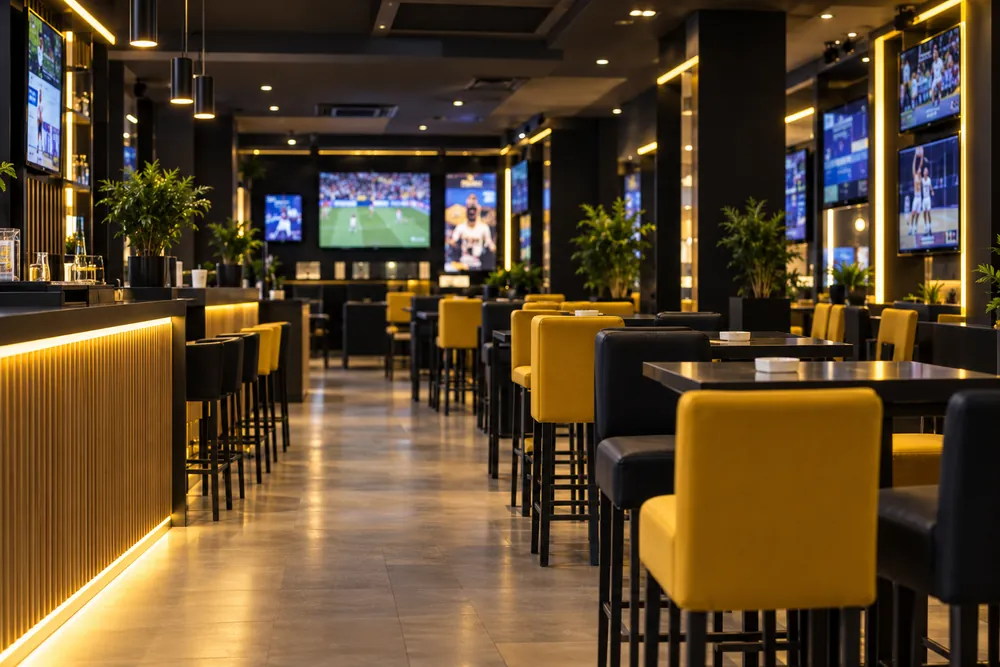
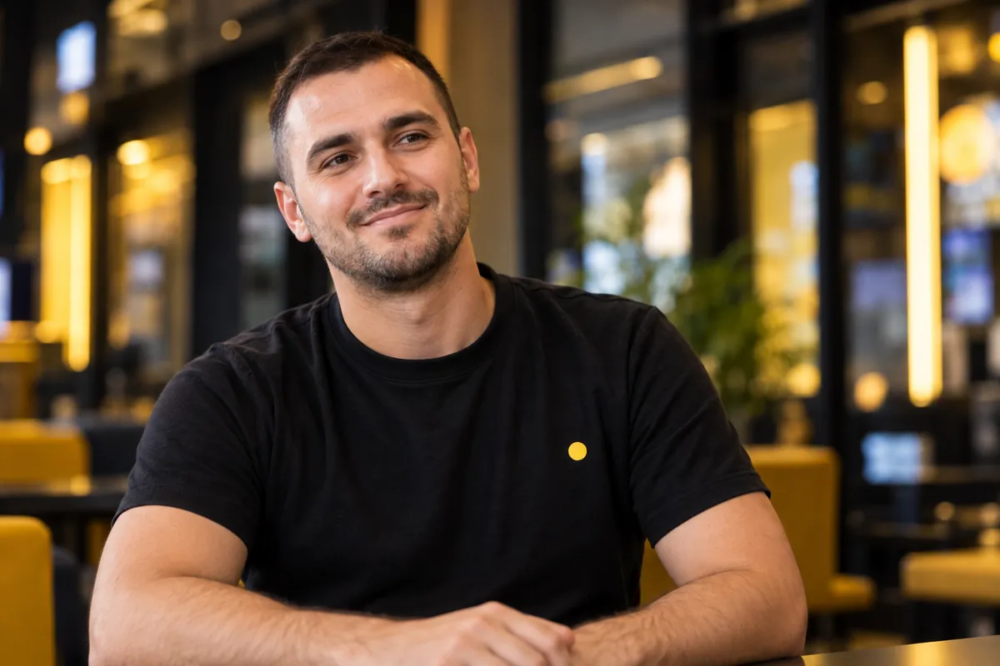
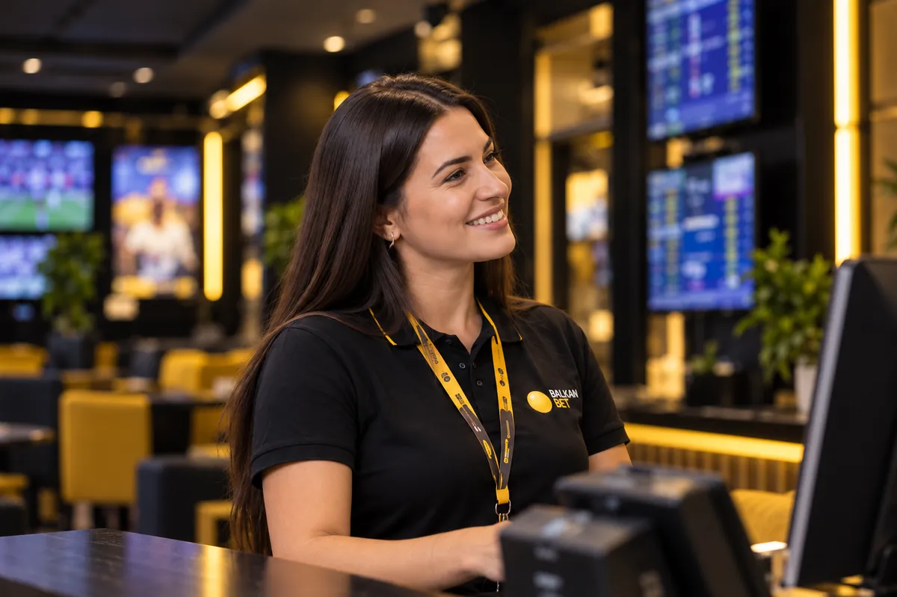
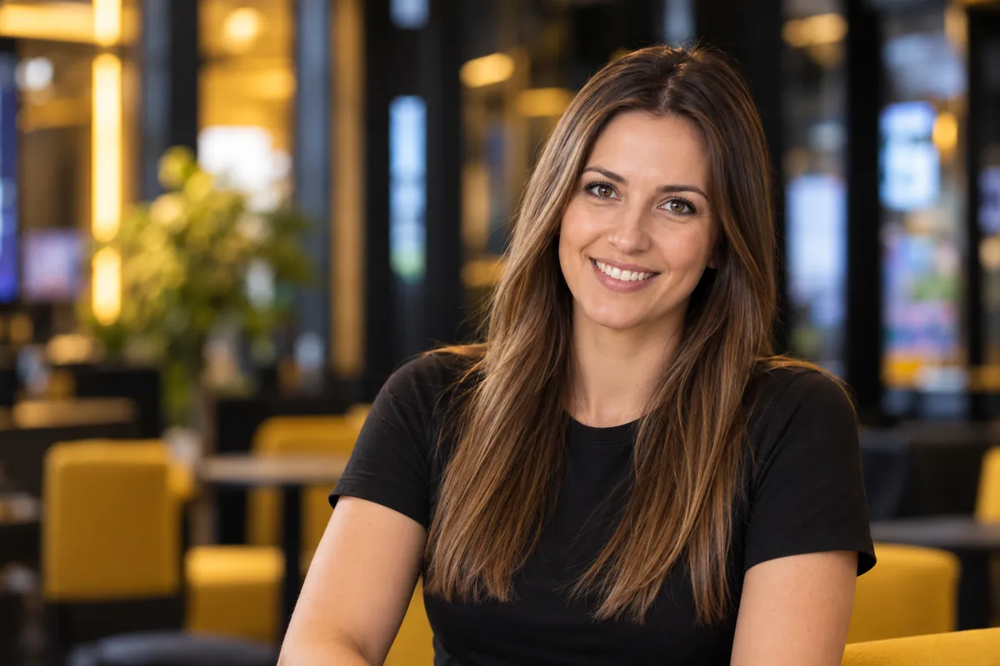

Dobra ekipa.
Tvoj sledeći potez.
Posao blizu tebe. Tim uz tebe. Prostor da napreduješ.
Više od posla
operatera.
Zašto je bolje nego što očekuješ?
-
Bakšiš
Dodatna zarada uz redovnu platu, svakog meseca.
-
Sjajan tim
Kolege na koje možeš da se osloniš — od prve smene.
-
Mogućnost napredovanja
Učiš, razvijaš se i praviš sledeći korak — do vođenja lokala.
Zaviri u svoje buduće radno mesto.
Moderni lokali, uređeni do detalja — mesto gde se dobro radi i gde gosti rado dolaze.



Pronađi lokal
blizu sebe
Preko 90 lokala u 13 gradova Srbije — velika je šansa da je jedan na tvom putu.
- Beograd
- Novi Sad
- Niš
- Kragujevac
- Subotica
- + još 8
Pogodnosti koje znače.
Ono što se ne vidi na prvi pogled, a oseti se svakog meseca.
Rad blizu kuće
Manje vremena na putu, više vremena za ono što voliš.
Mogućnost napredovanja
Učiš, razvijaš se i rasteš zajedno sa nama.
Plata + bonus + bakšiš
Redovna primanja, bonusi za zalaganje i dodatna zarada.
Porodične pogodnosti
Popusti za usluge, hotele i restorane — za tebe i tvoju porodicu.
Bonus za preporuku
Preporuči dobrog kolegu kroz Program preporuke i ostvari bonus.
Bonus za inicijativu
Cenimo ideje koje olakšavaju posao — i najbolje nagrađujemo.
Šta kažu naše kolege?

Najviše mi znači ekipa.
Marko Petrović
Operater · Beograd

Ovde se moj trud primećuje.
Ana Jovanović
Tim lider · Novi Sad

Posao koji se uklapa u moj život.
Milica Stojanović
Operater · Niš
Tvoj novi posao počinje ovde.
Postani deo tima koji osvaja. Prijava traje minut — bez CV-a.
Imaš pitanja?
Nije. Iskustvo na istoj poziciji i predznanje iz sporta, slota ili virtuelnih igara nisu potrebni — sve što treba da znaš naučićeš kroz obuku.
Da. Prve smene radiš uz iskusnog kolegu koji ti pokazuje sve korak po korak, dok ne budeš siguran/na da radiš samostalno.
Raspored se pravi unapred i u dogovoru sa timom, pa se želje uzimaju u obzir koliko god je moguće. Smene traju 8 sati.
Plata zavisi od pozicije i grada; tačan iznos saznaješ na razgovoru. Uz redovnu platu dobijaš i bonuse za zalaganje i bakšiš.
Put ide od operatera preko tim lidera i zamenika menadžera do menadžera lokala — većina naših menadžera počela je baš na prvoj smeni.
Izaberi poziciju na listi otvorenih pozicija i popuni kratku prijavu — bez CV-ja, za oko jedan minut.
Ako ne nađeš odgovor, piši nam na karijera@balkanbet.rs.